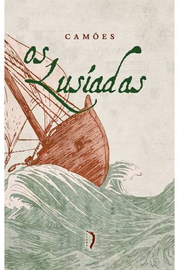
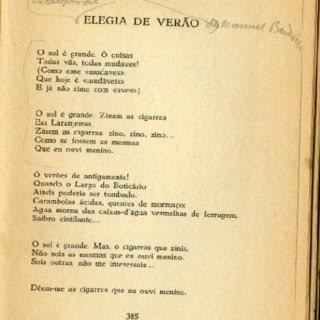
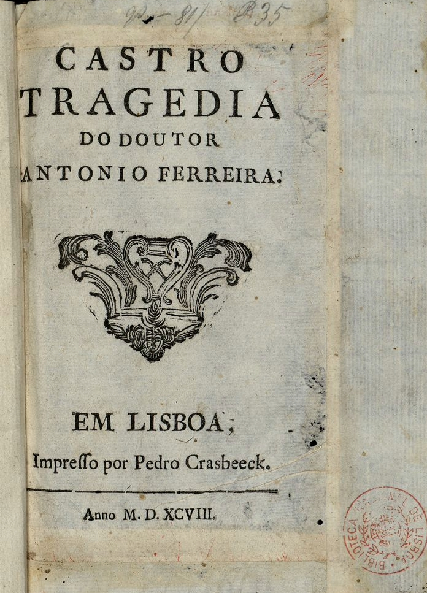

Os Lusíadas
Luís de Camões
O Classicismo surgiu durante o Renascimento e buscou recuperar os valores culturais da Antiguidade Greco-Romana. A razão, o equilíbrio e a valorização do ser humano tornaram-se princípios fundamentais da produção artística.
O período foi marcado pelo fortalecimento das monarquias nacionais e pelas Grandes Navegações, que expandiram o conhecimento geográfico e cultural europeu.
O crescimento do comércio e da burguesia impulsionou o desenvolvimento das cidades e favoreceu a difusão das ideias renascentistas.

Luís de Camões

Luís de Camões

Sá de Miranda

Antônio Ferreira
"Os Lusíadas", de Luís de Camões, é considerado o maior poema épico da língua portuguesa e narra a viagem de Vasco da Gama às Índias, exaltando as conquistas marítimas portuguesas.